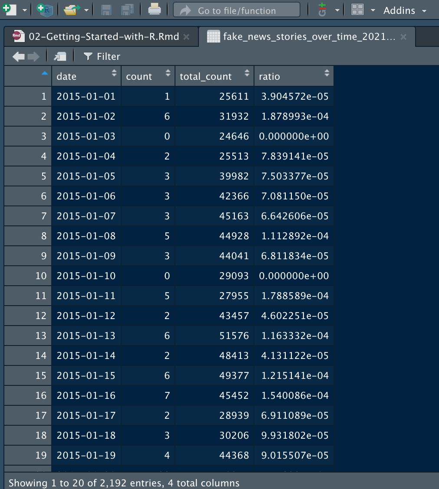

Chapter2 Getting started with R
2.1 RStudio Interface and Data
2.1.1 Download and Install RStudio
This course is based on the statistical software R. R is easier to use within RStudio, which works on Windows, macOS, and other operating systems.
It is possible to download a free version of RStudio Desktop from the official websites. You might also use a free online version of RStudio by registering to the RStudio Cloud free plan. However, the free plan gives you just 15 hours per months.
Now let’s see how to get started with RStudio Desktop. First, download and install a free version of RStudio Desktop and open the software.
2.1.2 Create a RStudio Project and Import data
When starting a data analysis project with RStudio, we create a new dedicated environment where we will keep all the scripts (files containing the code to perform the analysis), data sets, and outputs of the analysis (such as plots and tables). This dedicated workspace is simply called a project.
To create a new project with RStudio, follow these steps:
- click on File (on the top left);
- then, click on New Project;
- select New Directory, and New Project;
- Choose a folder for the project and give a name to your project. You can use the name Time-Series-Analysis-With-R.
This will create a new folder for the project in the main folder specified in the previous step. In this folder, you will find a file .Rproj, which has the same name as the project you assigned. To work on this project, you just need to open the .Rproj file.

2.1.3 Create a Script
Once the project is created, you can open a new script and save it.
A script is a file containing code. We can create a first script named basic-r-syntax, where you will test the basic code we are going to see. The script will be saved with extension .r.
You can open, change, and save the file every time you work on it. Saving your code is important; otherwise, you would have to write the same code every time you work on the project!

2.1.4 The RStudio User Interface
The interface of RStudio is organized in four main quadrants:
- The top-left quadrant is the editor. Here you can create or open a script and compose the R commands.
- The top-right quadrant shows the R workspace, which holds the data and other objects you have created in the current R session. There is also the Files tab, where you can navigate files and folders and find, for instance, the data sets you want to upload.
- On the bottom left is the R Console window, where the code gets executed and the output is produced. You can run the commands, sending the code from the editor to the console, by highlighting it and hitting the Run button, or the Ctrl-Enter key combination. It is also possible to type and run commands directly into the console window (in this case, nothing will be saved).
- The bottom-right quadrant is a window for graphics output. Here you can visualize your plots. There are also tabs for R packages and the R Help facility.

2.1.5 Load and Save Data
To load data into R, you can click on the Files window in the top-right quadrant, navigate your files and folders, and once you have found your data set file, you can just click it and follow the semi-automated import procedure.


Click here to watch “Import Data”
Otherwise, you can upload a data set by using a function. For instance, to import a csv file, one of the most common formats for data sets, you can use the function read.csv. The main argument of this function is the path of the file you want to upload. To specify the file path, consider that you are working within a specific environment; that is, your working directory is the folder of the project (you can double-check the working directory you are in by running the command getwd()). Thus, to indicate the path of the data set you want to upload, you can write a dot followed by a slash ./, followed by the path of the data set inside the working directory. For instance, in the case below, the data set is saved in a folder named data inside the working directory. The name of the data set is tweets_vienna and its extension is .csv. Therefore, the code to upload the file is as follows:
To save data, there are a few options. Generally, if you want to save a data set, you can opt for the .csv or the .rds format. The .rds format is only readable by R, while the .csv format is “universal” (you can read it with Excel, for instance).
To save a file as .csv, you can use the function write.csv. The main arguments of this function are the name of the object that has to be saved, the path to the folder where the object will be saved, and the name you want to assign to the file.
To save a .rds file, the procedure is similar, but the saveRDS function has to be employed. To read an .rds file, the appropriate function is readRDS.
In the code above, you can notice a hash mark sign followed by some text. It is a comment. Comments are textual content used to describe the code in order to make it easier to understand and reuse. Comments are written after the hash mark sign (#) because the text written after the hash mark sign is ignored by R: you can read the comments, but R does not consider them as code.
2.1.6 Create new Folders
It is good practice to create, in the main folder of the project, sub-folders dedicated to different types of files used in the project, such as a folder data for the data sets.
To create a new folder, you can go to the Files window in the RStudio interface, click New Folder, and give it a name.

2.2 Basic R
2.2.1 Objects
An object is an R entity composed of a name and a value.
The arrow (<-) sign is used to create objects and assign a value to an object (or to change or “update” its previous value).
Example: create an object with the name object_consisting_of_a_number and value equal to 2:
Enter the name of the object in the console and run the command: the value assigned to the object will be displayed.
## [1] 2The object is equal to its value. Therefore, for instance, an object with a numerical value can be used to perform arithmetical operations.
## [1] 20The value of an object can be transformed:
## [1] 20An object can also represent a function.
Example: create an object for the sum (addition) function:
The function can now be applied to two numerical values:
## [1] 7Actually, we don’t need this function, since mathematical functions are already implemented in R.
## [1] 7## [1] 12## [1] 6## [1] 9## [1] 3The value of an object can be a number, a function, or a vector. Vectors are sequences of values.
## [1] 1 2 3 4 5 6 7 8 9 10A vector of numbers can be the argument of mathematical operations.
## [1] 2 4 6 8 10 12 14 16 18 20## [1] 4 5 6 7 8 9 10 11 12 13Other R objects are matrix, list, and data.frame.
A matrix is a table composed of rows and columns containing only numerical values.
## [,1] [,2] [,3] [,4] [,5]
## [1,] 1 11 21 31 41
## [2,] 2 12 22 32 42
## [3,] 3 13 23 33 43
## [4,] 4 14 24 34 44
## [5,] 5 15 25 35 45
## [6,] 6 16 26 36 46
## [7,] 7 17 27 37 47
## [8,] 8 18 28 38 48
## [9,] 9 19 29 39 49
## [10,] 10 20 30 40 50A list is just a list of other objects. For instance, this list includes a numerical value, a vector of numbers, and a matrix.
## [[1]]
## [1] 20
##
## [[2]]
## [1] 1 2 3 4 5 6 7 8 9 10
##
## [[3]]
## [,1] [,2] [,3] [,4] [,5]
## [1,] 1 11 21 31 41
## [2,] 2 12 22 32 42
## [3,] 3 13 23 33 43
## [4,] 4 14 24 34 44
## [5,] 5 15 25 35 45
## [6,] 6 16 26 36 46
## [7,] 7 17 27 37 47
## [8,] 8 18 28 38 48
## [9,] 9 19 29 39 49
## [10,] 10 20 30 40 50A data.frame is like a matrix that can contain numbers but also other types of data, such as characters (a textual type of data) or factors (unordered categorical variables, such as gender, or ordered categories, such as low, medium, high).
Data sets are usually stored in data.frames. For instance, if you import a csv or an Excel file in R, the corresponding R object is a data.frame.
## [1] 1 2 3 4 5 6 7 8 9 10 11 12 13 14## [1] "Monday" "Tuesday" "Monday"
## [4] "Tuesday" "Monday" "Wednesday"
## [7] "Thursday" "Wednesday" "Thursday"
## [10] "Saturday" "Sunday" "Friday"
## [13] "Saturday" "Sunday"## first_variable second_variable
## 1 1 Monday
## 2 2 Tuesday
## 3 3 Monday
## 4 4 Tuesday
## 5 5 Monday
## 6 6 Wednesday
## 7 7 Thursday
## 8 8 Wednesday
## 9 9 Thursday
## 10 10 Saturday
## 11 11 Sunday
## 12 12 Friday
## 13 13 Saturday
## 14 14 SundayTo access a specific column of a data.frame, you can use the name of the data.frame, the dollar symbol $, and the name of the column.
## [1] 1 2 3 4 5 6 7 8 9 10 11 12 13 14## [1] "Monday" "Tuesday" "Monday"
## [4] "Tuesday" "Monday" "Wednesday"
## [7] "Thursday" "Wednesday" "Thursday"
## [10] "Saturday" "Sunday" "Friday"
## [13] "Saturday" "Sunday"It is possible to add columns to a data.frame by writing:
- the name of the data.frame
- the dollar sign
- a name for the new column
- the arrow sign <-
- a vector of values to be stored in the new column (it has to have length equal to the other vectors composing the data.frame)
## first_variable second_variable a_new_variable
## 1 1 Monday 12
## 2 2 Tuesday 261
## 3 3 Monday 45
## 4 4 Tuesday 29
## 5 5 Monday 54
## 6 6 Wednesday 234
## 7 7 Thursday 45
## 8 8 Wednesday 42
## 9 9 Thursday 6
## 10 10 Saturday 267
## 11 11 Sunday 87
## 12 12 Friday 3
## 13 13 Saturday 12
## 14 14 Sunday 9It is possible to visualize the first few rows of a data.frame by using the function head.
## first_variable second_variable a_new_variable
## 1 1 Monday 12
## 2 2 Tuesday 261
## 3 3 Monday 45
## 4 4 Tuesday 29
## 5 5 Monday 54
## 6 6 Wednesday 234
2.2.2 Functions
A function is a coded operation that applies to an object (e.g.: a number, a textual feature etc.) to transform it based on specific rules. A function has a name (the name of the function) and some arguments. Among the arguments of a function there is always an object or a value, for instance a numerical value, which is the content the function is applied to, and other possible arguments (either mandatory or optional).
Functions are operations applied to objects that give a certain output. E.g.: the arithmetical operation “addition” is a function that applies to two or more numbers to give, as its output, their sum. The arguments of the “sum” function are the numbers that are added together.
The name of the function is written out of parentheses, and the arguments of the function inside the parentheses:
## [1] 8Arguments of functions can be numbers but also textual features. For instance, the function paste creates a string composed of the strings that it takes as arguments.
## [1] "the cat is at home"In R you can sometimes find a “nested” syntax, which can be confusing. The best practice is to keep things as simple as possible.
## [1] "the cat is at home and sleeps on the sofa"To sum up, functions manipulate and transform objects. Data wrangling, data visualization, as well as data analysis, are performed through functions.
2.2.3 Data Types
Variables can have different R formats, such as:
- double: numbers that include decimals (0.1, 5.676, 121.67). This format is appropriate for continuous variables;
- integer: such as 1, 2, 3, 10, 400. It is a format suitable to count data;
- factors: for categorical variables. Factors can be ordered (e.g.: level of agreement: “high”, “medium”, “low”), or not (e.g.: hair colors “blond”, “dark brown”, “brown”);
- characters: textual labels;
- logicals: the format of logical values (i.e.: TRUE and FALSE)
- dates: used to represent days;
- POSIX: a class of R format to represent dates and times.
. SAGE Publications.](images/r-data-format.png)
Figure 2.1: R data formats. Tables from Gaubatz, K. T. (2014). A Survivor’s Guide to R: An Introduction for the Uninitiated and the Unnerved. SAGE Publications.
It is better to specify the appropriate type of data when importing a data set. In the example below, the data format are specified by using the import process of RStudio.
Notice that the data of type “date” requires users to specify the additional information regarding the format of the dates. Indeed, dates can be written in many different ways, and to read dates in R it is necessary to specify the structure of the date. In the example, dates are in the format Year-Month-Day, which is represented in R as “%Y-%m-%d” (further details will be provided in another section of the book).
2.2.4 Excercise
- Upload the data set “election news small”, using the appropriate data format;
- Open the script “basic-r-script” and perform the following operations:
- Check the first few rows of the data set;
- Access the single columns;
- Save the data frame with the name “election_news_small_test” in the folder “data” by using the function “write.csv” (to review the procedure go to the section “Load and Save Data” on this book);
- Comment the code (the comments have to be written after the hash sign #);
- Save the script.